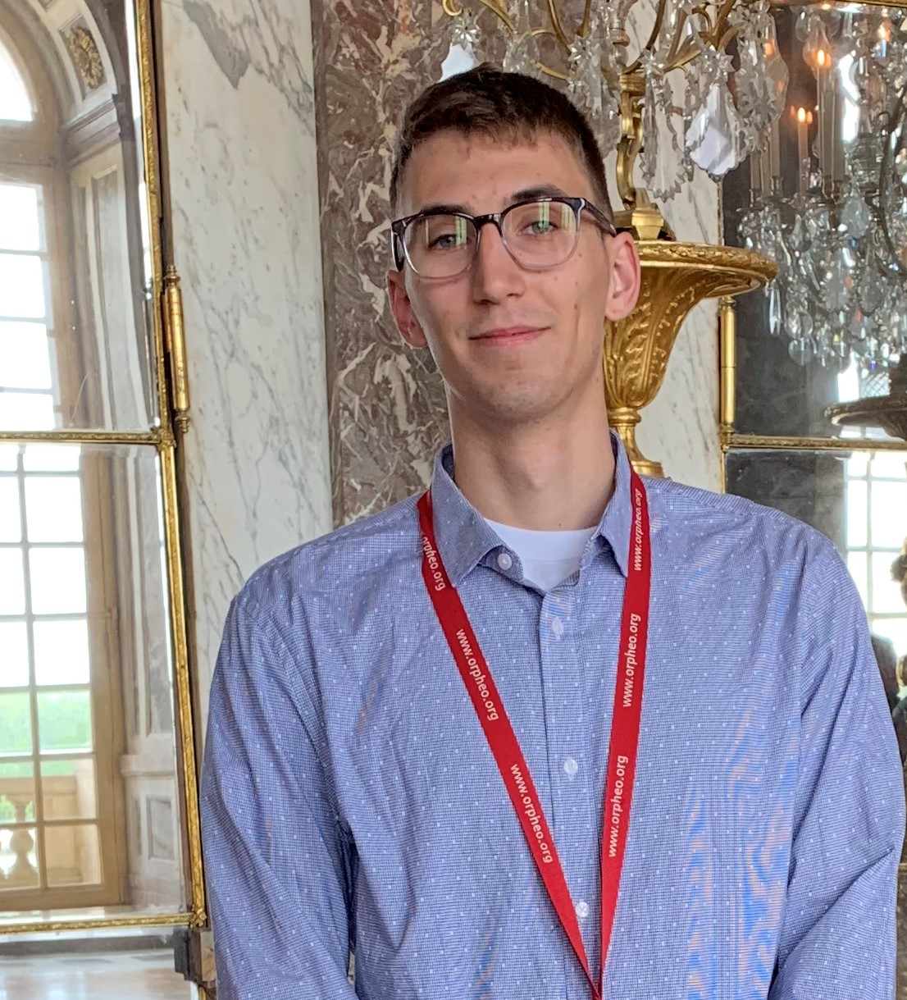

Austin Odell
Projects Experiences Education Resume
 I am a junior looking for a summer internship in software engineering or another computer-related field. I am currently enrolled as a full-time undergraduate student in the Pratt School of Engineering at Duke University, pursuing a degree in Electrical and Computer Engineering and Computer Science. This past summer I spent two months volunteering in Tanzania as a biomedical engineering technician with a program run by Engineering World Health with support from Duke Engage. The summer after freshman year I did a study abroad program in Costa Rica that helped me move from intermediate to advanced Spanish fluency and expand my cultural awareness and global perspective.
My prior work experience includes a semester as a teaching assistant for a computer architecture class and three summers life guarding and teaching swim lessons. I am an Eagle Scout and love the outdoors. My main involvement on campus is the Men's Rowing Team. I also volunteer with Girls Engineering Change.
- Rowing: I row as part of the Duke Men's Rowing Team
- Backpacking: I've done hikes in Yellowstone, Yosemite, Grand Canyon, and on the John Muir Trail
- Fantasy Novels: Currently reading the Stormlight Archive by Brandon Sanderson
- Video Games: My favorites are Borderlands and Oldschool Runescape
- Netflix/Youtube: Spend too much time on these